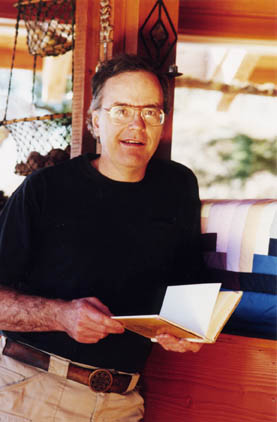

C.G. Jung Society, Seattle C.G. Jung Society, Seattle
C.G. Jung Society, Seattle C.G. Jung Society, SeattleLecture: Friday, November 11, 2005, 7 to 9 p.m.
Good Shepherd Center, Room 202, 4649 Sunnyside Ave., Seattle
$10 member, $15 nonmembers
2 CEUs
Workshop: Saturday, November 12, 2005, 10 a.m. to 2:30 p.m.
Good Shepherd Center, Room 202, 4649 Sunnyside Ave., Seattle
$40 members, $50 nonmembers
3.5 CEUs
To learn about preregistering for the workshop, see Preregistration Policy and Form.

There is a contemporary yearning for the return of the Goddess in psycho-spiritual experience. This manifests in all mature theologies (e.g. Jewish, Christian, Hindu, Buddhist) and all mature psychologies (e.g. Jungian, Freudian, narrative, Feminist). This seminar explores the imagistic footprints of Her return in contemporary cinema. Through the framework of Jungian psychology and Celtic spirituality we will explore Her frequent recent sightings. How do we rediscover in our Traditions the ancient Four Elements, the Four Seasons, the healingly erotic, the Deep Masculine, the Deep Feminine, the energizing dance of birth-death-rebirth, the archetype of pilgrimage? What does it mean that God the Mother is overtly, rightfully, and equally back in the Home with God the Father? How will it effect the genuinely holistic, trans-institutional/transcultural expressions of depth religious sentiment and practice currently sweeping this post-911, cyber-globe of ours?Recommended Readings:
Terrill L. Gibson, Ph.D., is a diplomate pastoral psychotherapist, an approved supervisor for the American Association for Marriage and Family Therapy, and a diploma Jungian analyst who practices individual and family therapy with Pastoral Therapy Associates in Tacoma. He lectures and writes widely on the basic theme of the integration of psychotherapy and spirituality. He has been a frequent consultant, faculty, supervisor, and facilitator for a variety of Pacific Northwest universities, social service agencies, corporations, and religious congregations. He has a passion for film, sea kayaks, and the blues. In 1997, a book he co-edited with Laura Dodson, Ph.D., Psyche and Family, was published by Chiron Press. Most recently, he has written two book chapters:
This program has been approved for 5.5 CEU’s by the Washington Chapter, National Association of Social Workers (NASW) for Licensed Social Workers, Licensed Marriage & Family Therapists and Licensed Mental Health Counselors. Provider number is #1975-157. The cost to receive a certificate is as follows: 5.5 units for lecture and workshop $15; 2.0 units for the Friday lecture $10; 3.5 units for the Saturday workshop $10.
Updated: 8 September, 2005
webmaster@jungseattle.org